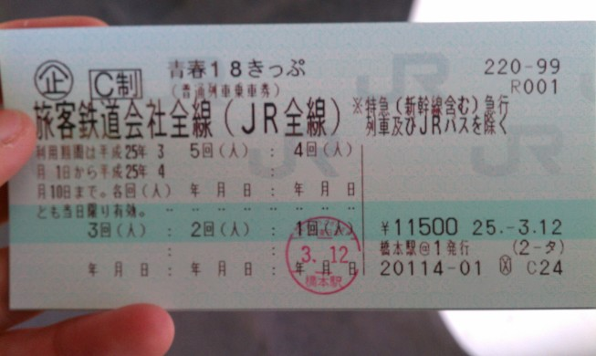
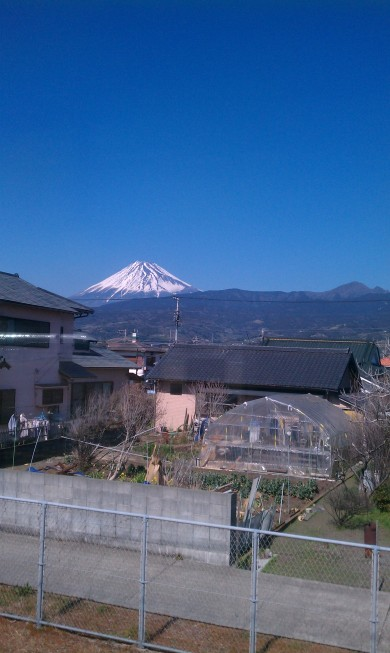
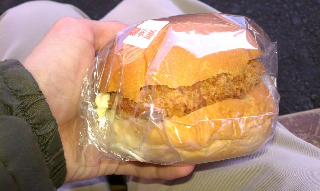
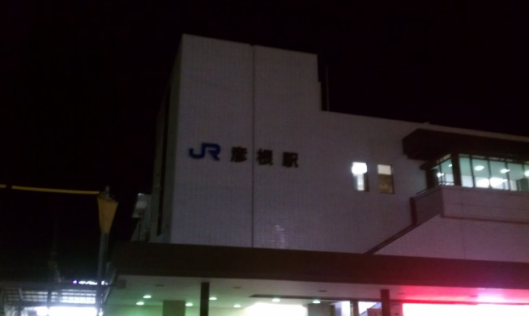
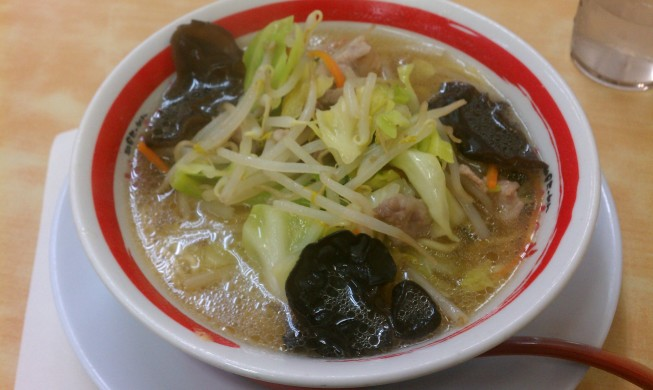

滋賀・福井旅行記(2013/03/12-2013/03/16)
春だし青春18きっぷで遠出しよう，ということで旅行してきた． こういうときのために，旅行したい場所はいくつかストックしてある．
今回の目的は，福井県武生に行ってボルガライスを食べること． 動機は デイリーポータルの記事 ． また，18きっぷを使うと滋賀県を経由するルートになるっぽいので，せっかくだし琵琶湖も見たい． そういえばアニメけいおん！の豊郷小学校もそのへんだったよね……．
そんな感じ．
03/12
計画ではこの日はほとんどが移動になる． 目標は彦根に着くこと．それだけ．
持ち物は着替え(2日分)，タオル，ノートPC，携帯の充電器，予備バッテリー(HTC evoなので必須)，メモ帳． あと一応，1日目に使う路線を印刷した紙と路線図．
朝9時に家を出て，橋本で青春18きっぷを購入する．

そのまま相模線に乗って茅ヶ崎へ行き，東海道本線に乗り換えて熱海を目指す． ボックス席に座ったらその後で3人組のお婆ちゃんがやってきて，コーヒー飴をくれた．
熱海でまた乗り換えて浜松へ向かう． 途中で富士山が見える．

浜松に着く前にお腹が空いたので，焼津で降りて食堂を探すことにした． が，13:30という時間が悪かったか，開いている店がない……． 仕方がないので駅のパン屋でまぐろメンチカツサンドとなると巻パンを買って食べる．

焼津から浜松へ再び向かい，更に乗り換えて豊橋，また乗り換えて大垣方面へ． giftee というサービスでクリスピークリームドーナツの引換券をもらっていて， 有効期限が近かったので名古屋で途中下車して引換に行く．ついでに駅前散策． 名古屋は町並みが新宿と似ていて，見知らぬ土地とは思えなかった． あと名古屋といえば味噌カツだけど，18:00と夕食にはちょっと早い微妙な時間なこともあり，食べずに先へ向かうことにした．
名古屋を出発して大垣，米原，そして彦根へ．

夕食に近江ちゃんぽんなるものを食べる．

よく見る長崎ちゃんぽんと違い，とんこつではなく澄んだスープになっている． 味はちゃんぽん……というかタンメン？ そもそもちゃんぽんとタンメンってどう違うんだ……．
食事した後で宿を探す． 安いネカフェとかあればそれでいいかなーと思ったけど，どうも近所にはないっぽい （と思ってたけど，探し方が悪くて見つからなかっただけで近江鉄道でちょっと出るとあった）． 仕方なく徒歩10分ほどのビジネスホテルに宿泊する．
その2へ続く ．